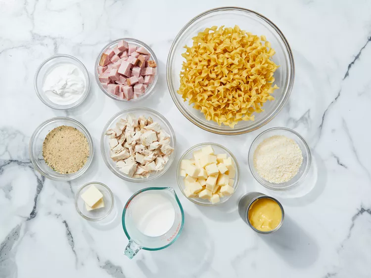
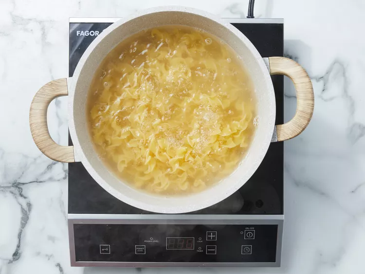
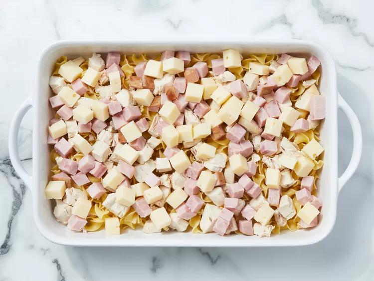
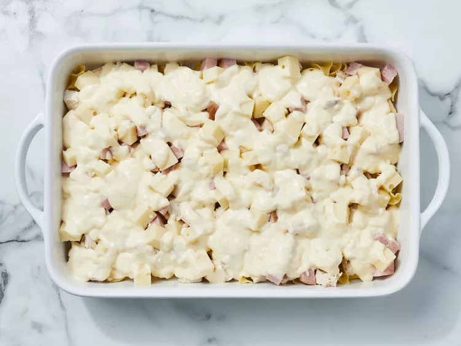
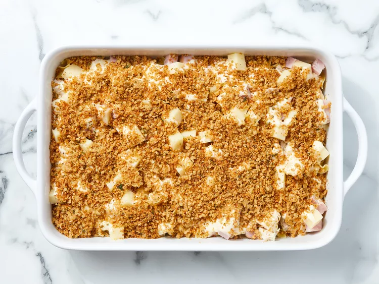
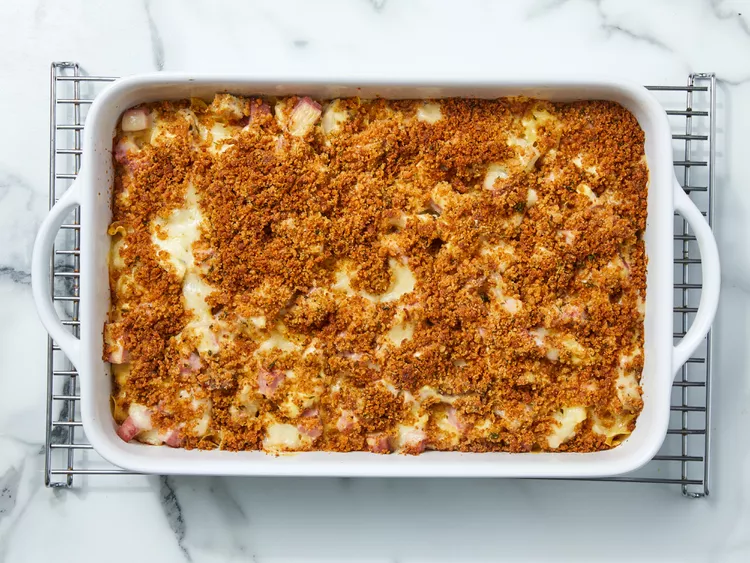
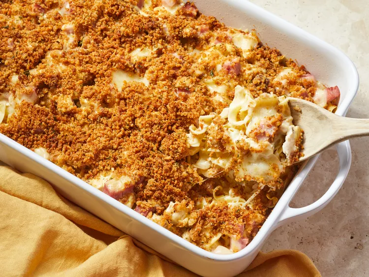

While they're cozy and comforting, casseroles don't often get the label of "fancy". These 18 standout dishes challenge that misconception.with beautiful presentations and indulgent ingredients like crab or Gouda cheese, can create impressive dishes that your family and guests will enjoy.
Gather all ingredients.
Preheat the oven to 350 degrees F (175 degrees C.). Lightly grease a 9x13-inch casserole dish.
Bring a large pot of lightly salted water to a boil. Cook egg noodles in boiling water, stirring occasionally, until tender yet firm to the bite, 7 to 9 minutes. Drain and transfer noodles to the prepared casserole dish.
Top noodles with chicken, ham,and Swiss cheese.
Mix together condensed soup, milk, and sour cream in a medium bowl until combined;spoon over noodles mixture in the casserole dish.
Melt butter in a skillet over medium heat;cook and stir bread crumbs and Parmesan cheese in hot butter until crumbs are well coated, 2 to 3 minutes. Sprinkle over casserole.
Bake in the preheated oven until casserole is bubbling and lightly browned,about 30 minutes.
Allow to cool slightly before serving.
